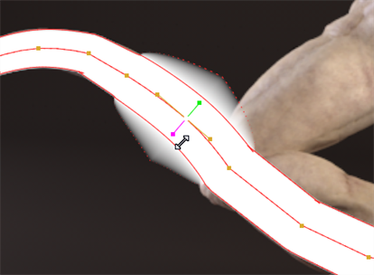

在这里，一个开放的花键被用来旋转生物的尾巴。
的 开放花键 工具允许您以与其他形状相似的方式绘制曲线，只是它们不需要形成封闭的形状。
创建后，可以使用标准的平滑和变换控制柄编辑开放样条曲线上的点，但它们也有单独的厚度和羽毛控制柄。图像显示开放的样条曲线和每个点的平滑 (橙色) 、厚度 (绿色) 和羽毛 (洋红色) 控制柄。
|
|
|
在这里，一个开放的花键被用来旋转生物的尾巴。 |
| 1。 |
右键单击
贝塞尔
在 RotoPaint 工具栏中选择
开放花键
工具
|
提示: 你也可以按 V ,当观察者有焦点时，循环浏览可用的工具。
| 2. | 选择颜色、混合模式、不透明度和其他适用于查看器顶部所有 RotoPaint 工具的设置。(有关可用选项的信息，请参见 编辑现有笔触/形状属性 )。 |
RotoPaint 有一些额外的开放花键特定的控制:
• 宽度 -控制样条线的总厚度。
• 开始类型 -将样条曲线中第一个点的状态设置为 四舍五入 或 广场 .
• 结束类型 -将样条曲线中最后一点的状态设置为 四舍五入 或 广场 .
| 3. | 在查看器中单击以放置样条线的起点，然后在正在使用的特征上添加所需的点数。 |
| 4. | 新闻 返回 或者选择另一个工具来完成打开的花键, |
OR
单击打开的样条线中的第一个点以关闭形状。闭合样条线的填充方式与其他形状工具不同，如 贝塞尔 和 椭圆 。可以通过右击样条曲线上的点并选择来打开闭合的样条曲线 打开/关闭形状 .

| 5. | 通过选择所需的点并使用查看器中显示的控制柄，可以调整样条曲线上单个点的粗细和粗细。 |
拖动控制柄并释放以将更改应用于选定的点。
|
|
|
|
减少和增加花键厚度 (绿色手柄)。 |
|
|
|
 |
|
减少和增加羽化 (洋红色手柄)。 |
|
| 6. | 或者，在 RotoPaint 工具设置中设置形状的寿命。(有关可用选项的信息，请参见 编辑现有描边/形状计时 )。 |
|
|